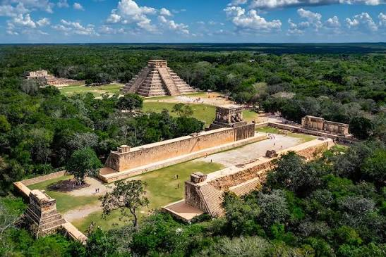
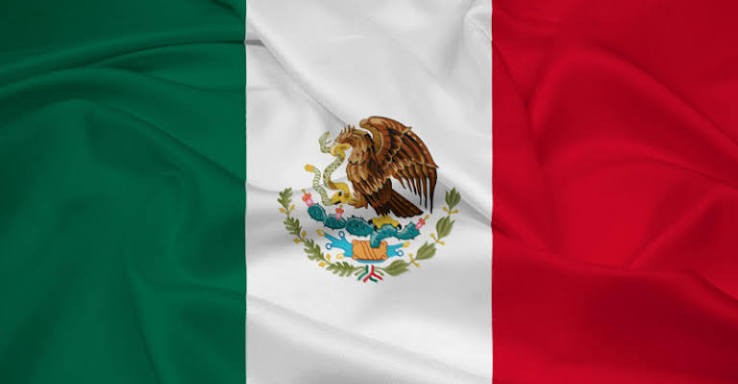
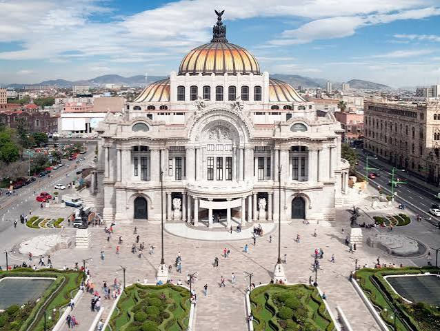
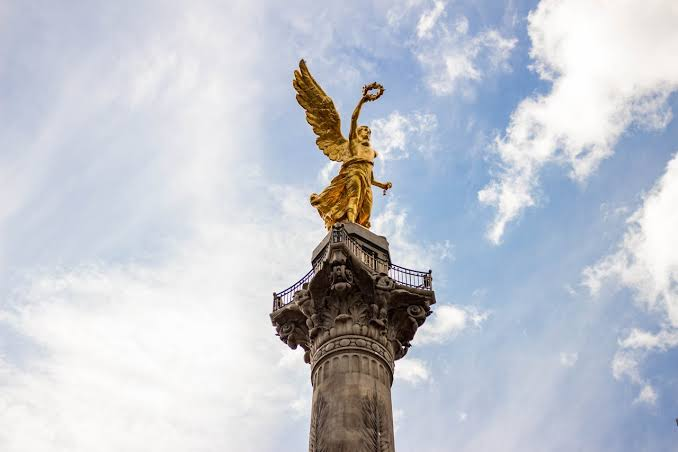
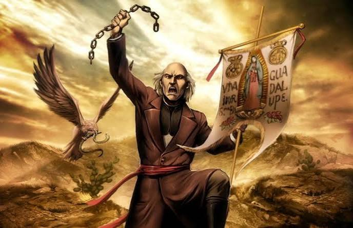
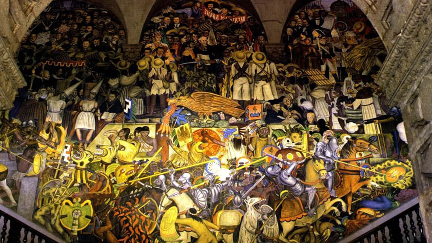

Historia de la Independencia
La Independencia de México fue el proceso histórico mediante el cual México se separó del dominio del Imperio Español, luego de más de 300 años de colonización. Este movimiento comenzó formalmente el 16 de septiembre de 1810, cuando el cura Miguel Hidalgo y Costilla dio el famoso "Grito de Independencia" en el pueblo de Dolores, Guanajuato.
El conflicto armado duró aproximadamente 11 años, hasta que el 27 de septiembre de 1821 el Ejército Trigarante entró triunfalmente a la Ciudad de México, consumando la independencia nacional. El movimiento fue impulsado por ideas ilustradas europeas y el descontento de criollos, mestizos e indígenas ante el sistema colonial.



Las causas de la Independencia fueron diversas. Entre ellas estuvieron las desigualdades sociales, los privilegios de los peninsulares, las dificultades económicas y el descontento de distintos grupos de la sociedad novohispana. También influyeron acontecimientos externos, como la Ilustración, la Independencia de las Trece Colonias y la Revolución Francesa.
La lucha no fue un acontecimiento de un solo día, sino un proceso que atravesó diferentes etapas. Después del levantamiento iniciado por Hidalgo, José María Morelos organizó y dirigió nuevas campañas insurgentes. Más tarde, durante una etapa de resistencia, destacaron líderes como Vicente Guerrero. Finalmente, el Plan de Iguala y la alianza entre Iturbide y Guerrero facilitaron la consumación de la independencia en 1821.
La consumación de la Independencia marcó el inicio de una nueva etapa para México. El país tuvo que organizar su propio gobierno, enfrentar problemas económicos y definir la forma de construir una nación independiente. Por ello, la independencia política no significó que todos los problemas sociales y económicos desaparecieran de inmediato.
Personajes Principales
Muchos hombres y mujeres participaron en la lucha por la independencia. Los más destacados fueron:
- Miguel Hidalgo y Costilla — Cura de Dolores, dio inicio al movimiento el 16 de septiembre de 1810.
- José María Morelos y Pavón — Caudillo militar que dirigió la causa tras la muerte de Hidalgo.
- Ignacio Allende — Capitán del ejército criollo, aliado clave de Hidalgo.
- Josefa Ortiz de Domínguez — "La Corregidora", heroína que alertó a los conspiradores.
- Vicente Guerrero — Insurgente que continuó la lucha hasta la consumación.
- Agustín de Iturbide — Firmó el Plan de Iguala y consumó la independencia en 1821.
Además de los personajes mencionados, participaron muchas otras personas que contribuyeron al movimiento insurgente. Entre ellas estuvieron Leona Vicario, quien apoyó a los insurgentes, y Guadalupe Victoria, quien continuó la lucha y posteriormente participó en la vida política del México independiente.
Miguel Hidalgo destacó por iniciar el levantamiento; Morelos organizó campañas militares y presentó el documento conocido como Sentimientos de la Nación; Josefa Ortiz de Domínguez colaboró con los conspiradores; y Vicente Guerrero mantuvo la resistencia en una etapa difícil del movimiento. La participación de estos personajes muestra que la independencia fue resultado de la intervención de distintos grupos y líderes.
Fechas Clave
A continuación se presentan los eventos más importantes del proceso de independencia:
| Fecha | Evento |
|---|---|
| 16 de septiembre de 1810 | Grito de Independencia en Dolores, Guanajuato |
| 30 de julio de 1811 | Fusilamiento de Miguel Hidalgo en Chihuahua |
| 6 de noviembre de 1813 | Solemne Acta de la Declaración de Independencia de la América Septentrional |
| 22 de diciembre de 1815 | Fusilamiento de José María Morelos en Ecatepec |
| 24 de febrero de 1821 | Proclamación del Plan de Iguala por Agustín de Iturbide |
| 27 de septiembre de 1821 | Consumación de la Independencia — Entrada del Ejército Trigarante a la CDMX |
| 19 de septiembre de 1808 | Inicio de una importante crisis política en Nueva España relacionada con la situación de la monarquía española. |
| 14 de septiembre de 1813 | Morelos inauguró el Congreso de Chilpancingo. |
| 14 de septiembre de 1813 | Morelos presentó los Sentimientos de la Nación, documento fundamental del movimiento insurgente. |
| 22 de octubre de 1814 | Se promulgó el Decreto Constitucional para la Libertad de la América Mexicana, conocido como Constitución de Apatzingán. |
| 24 de agosto de 1821 | Se firmaron los Tratados de Córdoba, relacionados con la consumación de la independencia. |
Tradiciones del Mes Patrio
Cada año, durante el mes de septiembre, los mexicanos conmemoran la independencia con diversas celebraciones que reflejan el orgullo y la identidad nacional.
El Grito de Independencia es la celebración más importante, que se lleva a cabo la noche del 15 de septiembre en el Zócalo de la Ciudad de México, donde el Presidente de la República repite las palabras de Hidalgo ante miles de personas.
También se realizan desfiles militares y cívicos el 16 de septiembre, juegos pirotécnicos, verbenas populares con música, gastronomía típica como chiles en nogada, pozole y tostadas, así como decoración con los colores verde, blanco y rojo en calles, escuelas y hogares.
Durante estas fechas también es común que las familias se reúnan para compartir alimentos tradicionales y que las escuelas organicen actividades relacionadas con la historia de México. Las plazas y edificios públicos suelen decorarse con motivos patrios, banderas y elementos representativos de la identidad nacional.
El 15 de septiembre se realizan ceremonias del Grito de Independencia, mientras que el 16 de septiembre se conmemora el inicio del movimiento de 1810. Estas dos fechas están estrechamente relacionadas, aunque representan momentos diferentes dentro de la conmemoración nacional.
Los símbolos patrios, como la bandera, el escudo y el himno nacional, tienen una presencia importante durante las celebraciones. El Mes Patrio también es una oportunidad para conocer la historia del país y reflexionar sobre los valores de libertad, soberanía, identidad y participación ciudadana.
Galería



Las imágenes de esta galería representan diferentes elementos relacionados con la historia y la identidad de México. El Ángel de la Independencia es uno de los monumentos más reconocidos del país; Miguel Hidalgo representa el inicio del movimiento insurgente; y los murales históricos permiten conocer distintas interpretaciones artísticas de la historia nacional.